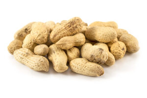
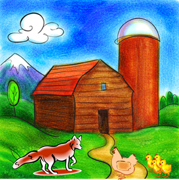

కొన్ని సంవత్సరాల క్రితం ఒక వూరిలో లక్ష్మి అనే పేరుగల ఒకావిడ వుండేది. ఆవిడకు రోజూ సాయంత్రం ఇంటి దెగ్గిర వున్న పార్కులో ఒక బెంచి మీద కూర్చుని తనతో తెచ్చుకున్న పుస్తకం చదవడం అలవాటు. రోజూ అదే బెంచి మీద కూర్చునే అలవాటు పడిన లక్ష్మిగారికి కొద్దిరోజులకి ఆ బెంచి ప్రత్యేకించి తనదే అన్న ఒక భావం ఏర్పడిపోయింది. అలాగే ఒక రోజు పార్కులోకి వెళ్తుంటే అక్కడ వేడి వేడిగా వేరుశనగలు అమ్ముతున్న బండివాడు కనిపించాడు. వాసనకి నోరూరిన లక్ష్మి గారు ఒక పొట్లం వేరుశనగలు కొనుక్కుని తన మామూలు పధ్ధతి లో తన బెంచి కి వెళ్ళింది. చూస్తే అక్కడ తన బెంచి మీద అప్పటికే ఒక పెద్దాయిన కూర్చుని ఉన్నారు. రుసరుసలాడుతూ తన షాల్వా, పర్సు, కూడా తెచుకున్న ఇతర సామాన్లు, చేతిలో వేరుశనగల పొట్లం పక్కన పెట్టి కూర్చుని పుస్తకం తీసింది. చదువుతూ పక్కనవున్న వేరుశనలు అందుకుని వల్చుకుంటూ తినడం మొదలుపెట్టింది. తీరా చూస్తే పక్కనున్న పెద్దాయన కూడా అదే పొట్లంలోంచి వేరుశనగలు తీసుకుని తింటున్నారు. “ఎంత పొగరు, అడగకుండానే నా వేరుశెనగలు తినేస్తునాడు, ఇలాంటి వాళ్ళు వుండ బట్టే మన దేశం ఇలా వుంది” అని మనసులో లక్ష తిట్టుకుంటూ పైకి ఏమి అనలేక అలాగే కాసేపు కూర్చుంది. కొద్ది సేపటి తరువాత ఎక్కడ పెద్దాయన వేరుశనగలు అన్ని తినేస్తారో అని లక్ష్మిగారు కూడ పోటి పడి గబ గబా మిగిలిన వేరుశెనగలు వల్చుకుని తినేసింది. అన్ని అయిపోయి చివరికి ఒక్క వేరుశనగ మిగిలింది. ఫెద్దాయన చిరునవ్వుతొ “ఇది మీరు తీసుకోండి” అని లేచి చిన్నగా నడుచుకుంటూ వెళ్ళిపోయరు.లలష్మిగారు “వేరుశనగ దొంగ!” అని చికకుగా అనుకుంది. లేచి తన సామాను బెంచి మీద నుంచి తీసుకుంటు చూస్తే అక్కడ తన వేరుశనగల పొట్లం భద్రంగా తన దెగ్గిరే కనిపించింది.“అయ్యో! ఐతే నేనే వేరుశనగల దొంగనా! పాపం అయ్యిన్ని ఎన్ని మాటలనుకున్ననో!’ అని చాలా బాధ పడింది. అందుకే నిజానిజాలు తెలుసుకోకుండా నిందలు వేయరాదు. 
అనగనగా ఒక ఊరిలో ఒక నక్క రోజూ కోళ్ళను, కోడి పిల్లలను తినేసేది. రోజూ ఆ నక్క చేసే పనికి ఊళ్ళో జనమంతా వంచించబడ్డారు. ఒక రోజు ఆ నక్క ఒక పొలంలో చచ్చి పడున్నట్టు కనబడింది. ఊళ్ళో వాళ్ళంతా మొత్తానికి ఆ నక్కను ఎవరో చంపేసారని హర్షించారు. జనమంతా ఆ నక్కను చూడడానికి పొలానికి చేరుకున్నారు. ఒక కోడి పుంజు కూడా తన పిల్లలతో చూడడానికి వెళ్ళింది. ఇంతలో ఆ నక్క లేచి, పెద్దగా ఆవలించింది. “అరే! నువ్వు చచ్చిపోయావనుకున్నామే!” అంది కోడి పుంజు. “లేదు, అదేమి కాదు. నిన్న రాత్రి బాగా తిన్నాను, అందుకే నిద్ర పట్టేసింది” అని జవాబు చెప్పిందా నక్క. కోడిపుంజు వెంటనే తన పిల్లలను లెక్క పెట్టుకుంది. ఒక కోడి పిల్ల తక్కువ వుంది. “ఇదేమిటి, ఒక పిల్ల తక్కువ వున్నా నాకు తెలియలేదే,” అంది. “ఏమిటయ్య! నిన్న రాత్రి నీ పిల్లను తింటే నీకు తెలీలేదు కాని ఒక క్షణం క్రితం నేను చచ్చానని తెలుస్తే వెంటనే వచ్చావు” అంది నక్క వ్యంగ్యంగా. నిజమే, ముందు మన ఇల్లు చక్కబెట్టుకుని, తరవాత ఇతరుల విషయం పట్టించుకోవాలి. 